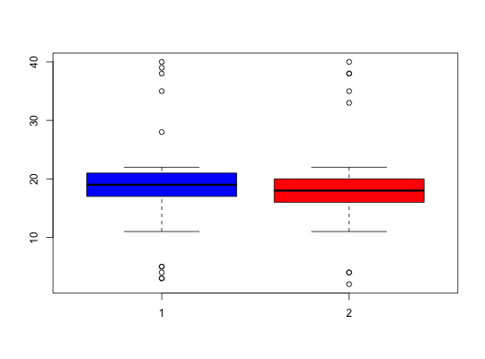

Data for Exercise 7.43
A data frame with 42 observations on the following 2 variables.
Kitchens, L. J. (2003) Basic Statistics and Data Analysis. Duxbury
str(Remedial)#> 'data.frame': 42 obs. of 2 variables: #> $ female: int 28 21 4 20 16 19 39 22 5 18 ... #> $ male : int 18 22 16 14 2 16 18 20 22 19 ... #>attach(Remedial) boxplot(female,male,col=c("blue","red"))wilcox.test(female,male,conf.int=TRUE)Warning message: cannot compute exact p-value with tiesWarning message: cannot compute exact confidence intervals with ties#> #> Wilcoxon rank sum test with continuity correction #> #> data: female and male #> W = 855.5, p-value = 0.218 #> alternative hypothesis: true location shift is not equal to 0 #> 95 percent confidence interval: #> -0.9999613 3.0000179 #> sample estimates: #> difference in location #> 1.000093 #> #>t.test(female,male)#> #> Welch Two Sample t-test #> #> data: female and male #> t = 0.20997, df = 68.546, p-value = 0.8343 #> alternative hypothesis: true difference in means is not equal to 0 #> 95 percent confidence interval: #> -3.522407 4.350978 #> sample estimates: #> mean of x mean of y #> 19.34286 18.92857 #> #>detach(Remedial)